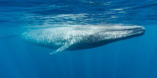
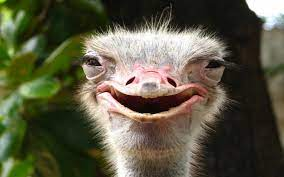

Llamas

llama, (Lama glama), domesticated livestock species, descendant of the guanaco (Lama guanicoe), and one of the South American members of the camel family, Camelidae (order Artiodactyla). The llama is primarily a pack animal, but it is also used as a source of food, wool, hides, tallow for candles, and dried dung for fuel. Llama herds are found primarily in Bolivia, Peru, Colombia, Ecuador, Chile, and Argentina, and they have been exported to other countries...
Click here to read more
Blue Whale

The blue whale is one of the rorquals, a family that also includes the humpback whale, fin whale, Bryde's whale, sei whale, and minke whale. On land an animal the size of a blue whale would be crushed by its own weight without the support of large heavy bones. Because its body is supported by water, as a sea animal, the need for heavy bones to support its weight disappeared...
Click here to read more
Ostrich

Ostrich, (Struthio camelus), large flightless bird found only in open country in Africa. The largest living bird, an adult male may be 2.75 metres (about 9 feet) tall—almost half of its height is neck—and weigh more than 150 kg (330 pounds); the female is somewhat smaller. The ostrich’s egg, averaging about 150 mm (6 inches) in length by 125 mm (5 inches) in diameter and about 1.35 kg (3 pounds), is also the world’s largest. The male is mostly black but has white plumes in the wings and tail; females are mostly brown...
Click here to read more